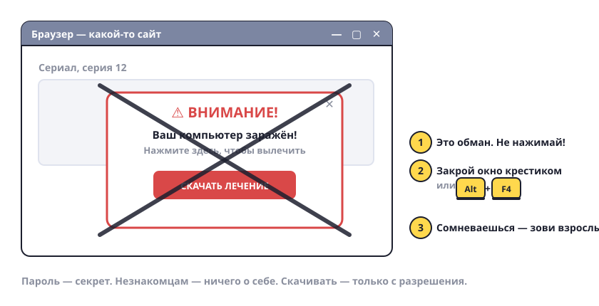

Правила безопасности
Компьютер и интернет — как большой город. Там интересно, но есть правила, чтобы не попасть в беду.

Семь правил
- Пароль — секрет. Не говори его друзьям и не пиши на бумажке рядом с компьютером. Знают только ты и родители.
- Не скачивай что попало. «Бесплатные роблоксы», «взлом игры», «читы» — почти всегда это вирус. Хочешь что-то установить — спроси родителей.
- Всплыло окно «Ваш компьютер заражён! Нажмите здесь!» — это обман. Не нажимай, закрой окно крестиком или Alt+F4.
- Не рассказывай незнакомцам в играх и чатах, где ты живёшь, в какой школе учишься, когда родителей нет дома. Даже если человек «тоже 10 лет».
- Не вводи ничего про деньги. Номера карт, коды из СМС — только родители.
- Кто-то обижает или пугает в интернете — не отвечай, а покажи родителям. Это не ябедничать, это правильно.
- Сохраняй работу. Ctrl+S каждые несколько минут. Компьютер может выключиться — и всё пропадёт.
Попробуй сам: расскажи родителям три правила из списка своими словами. Договоритесь, что ты будешь спрашивать перед тем, как что-то скачать.
Простое правило: если сомневаешься — спроси взрослого. Спросить всегда лучше, чем чинить потом.